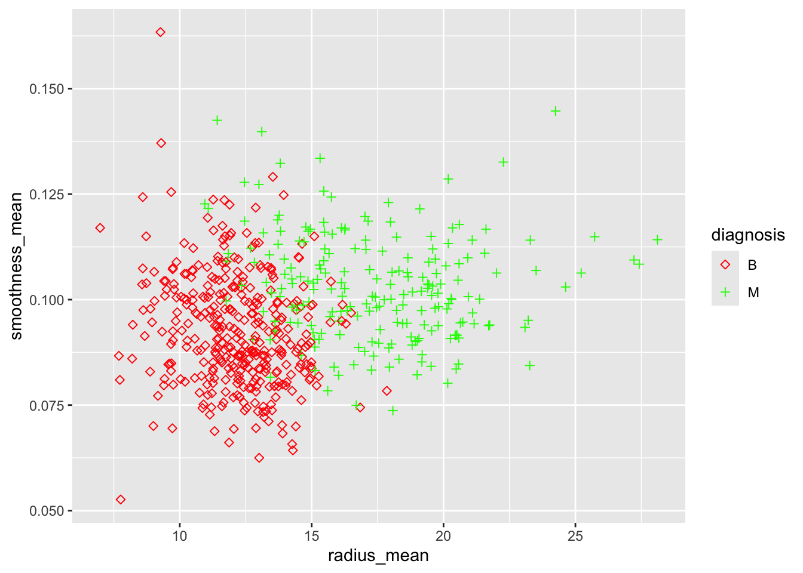

Código
cancer_raw <- read_csv('cancer_dataset.csv')Clasificación con el conjunto de datos cancer.
El conjunto de datos
cancerproporciona información de 569 pacientes sobre 30 características de los núcleos celulares obtenidas de una imagen digitalizada de una aspiración con aguja fina (FNA) de una masa mamaria. Para cada paciente, el cáncer fue diagnosticado como maligno o benigno.
Cargamos el conjunto de datos desde cancer_dataset.csv.
cancer_raw <- read_csv('cancer_dataset.csv')Transformamos los datos, seleccionamos columnas y eliminamos filas con na.
cancer_data <- cancer_raw %>%
mutate(diagnosis = as.factor(diagnosis)) %>%
select(-c('id')) %>%
drop_na()
cancer_data# A tibble: 569 × 31
diagnosis radius_mean texture_mean perimeter_mean area_mean smoothness_mean
<fct> <dbl> <dbl> <dbl> <dbl> <dbl>
1 B 12.3 12.4 78.8 464. 0.103
2 B 10.6 19.0 69.3 346. 0.0969
3 B 11.0 16.8 70.9 373. 0.108
4 B 11.3 13.4 73 385. 0.116
5 B 15.2 13.2 97.6 712. 0.0796
6 B 11.6 19.0 74.2 410. 0.0855
7 B 11.5 23.9 74.5 404. 0.0926
8 M 13.8 23.8 91.6 598. 0.132
9 B 10.5 19.3 67.4 336. 0.0999
10 B 11.1 15.0 71.5 374. 0.103
# ℹ 559 more rows
# ℹ 25 more variables: compactness_mean <dbl>, concavity_mean <dbl>,
# points_mean <dbl>, symmetry_mean <dbl>, dimension_mean <dbl>,
# radius_se <dbl>, texture_se <dbl>, perimeter_se <dbl>, area_se <dbl>,
# smoothness_se <dbl>, compactness_se <dbl>, concavity_se <dbl>,
# points_se <dbl>, symmetry_se <dbl>, dimension_se <dbl>, radius_worst <dbl>,
# texture_worst <dbl>, perimeter_worst <dbl>, area_worst <dbl>, …Resumen estadístico básico de los datos: mínimos, máximos, medias, medianas, cuartiles, etc.
summary(cancer_data) diagnosis radius_mean texture_mean perimeter_mean area_mean
B:357 Min. : 6.981 Min. : 9.71 Min. : 43.79 Min. : 143.5
M:212 1st Qu.:11.700 1st Qu.:16.17 1st Qu.: 75.17 1st Qu.: 420.3
Median :13.370 Median :18.84 Median : 86.24 Median : 551.1
Mean :14.127 Mean :19.29 Mean : 91.97 Mean : 654.9
3rd Qu.:15.780 3rd Qu.:21.80 3rd Qu.:104.10 3rd Qu.: 782.7
Max. :28.110 Max. :39.28 Max. :188.50 Max. :2501.0
smoothness_mean compactness_mean concavity_mean points_mean
Min. :0.05263 Min. :0.01938 Min. :0.00000 Min. :0.00000
1st Qu.:0.08637 1st Qu.:0.06492 1st Qu.:0.02956 1st Qu.:0.02031
Median :0.09587 Median :0.09263 Median :0.06154 Median :0.03350
Mean :0.09636 Mean :0.10434 Mean :0.08880 Mean :0.04892
3rd Qu.:0.10530 3rd Qu.:0.13040 3rd Qu.:0.13070 3rd Qu.:0.07400
Max. :0.16340 Max. :0.34540 Max. :0.42680 Max. :0.20120
symmetry_mean dimension_mean radius_se texture_se
Min. :0.1060 Min. :0.04996 Min. :0.1115 Min. :0.3602
1st Qu.:0.1619 1st Qu.:0.05770 1st Qu.:0.2324 1st Qu.:0.8339
Median :0.1792 Median :0.06154 Median :0.3242 Median :1.1080
Mean :0.1812 Mean :0.06280 Mean :0.4052 Mean :1.2169
3rd Qu.:0.1957 3rd Qu.:0.06612 3rd Qu.:0.4789 3rd Qu.:1.4740
Max. :0.3040 Max. :0.09744 Max. :2.8730 Max. :4.8850
perimeter_se area_se smoothness_se compactness_se
Min. : 0.757 Min. : 6.802 Min. :0.001713 Min. :0.002252
1st Qu.: 1.606 1st Qu.: 17.850 1st Qu.:0.005169 1st Qu.:0.013080
Median : 2.287 Median : 24.530 Median :0.006380 Median :0.020450
Mean : 2.866 Mean : 40.337 Mean :0.007041 Mean :0.025478
3rd Qu.: 3.357 3rd Qu.: 45.190 3rd Qu.:0.008146 3rd Qu.:0.032450
Max. :21.980 Max. :542.200 Max. :0.031130 Max. :0.135400
concavity_se points_se symmetry_se dimension_se
Min. :0.00000 Min. :0.000000 Min. :0.007882 Min. :0.0008948
1st Qu.:0.01509 1st Qu.:0.007638 1st Qu.:0.015160 1st Qu.:0.0022480
Median :0.02589 Median :0.010930 Median :0.018730 Median :0.0031870
Mean :0.03189 Mean :0.011796 Mean :0.020542 Mean :0.0037949
3rd Qu.:0.04205 3rd Qu.:0.014710 3rd Qu.:0.023480 3rd Qu.:0.0045580
Max. :0.39600 Max. :0.052790 Max. :0.078950 Max. :0.0298400
radius_worst texture_worst perimeter_worst area_worst
Min. : 7.93 Min. :12.02 Min. : 50.41 Min. : 185.2
1st Qu.:13.01 1st Qu.:21.08 1st Qu.: 84.11 1st Qu.: 515.3
Median :14.97 Median :25.41 Median : 97.66 Median : 686.5
Mean :16.27 Mean :25.68 Mean :107.26 Mean : 880.6
3rd Qu.:18.79 3rd Qu.:29.72 3rd Qu.:125.40 3rd Qu.:1084.0
Max. :36.04 Max. :49.54 Max. :251.20 Max. :4254.0
smoothness_worst compactness_worst concavity_worst points_worst
Min. :0.07117 Min. :0.02729 Min. :0.0000 Min. :0.00000
1st Qu.:0.11660 1st Qu.:0.14720 1st Qu.:0.1145 1st Qu.:0.06493
Median :0.13130 Median :0.21190 Median :0.2267 Median :0.09993
Mean :0.13237 Mean :0.25427 Mean :0.2722 Mean :0.11461
3rd Qu.:0.14600 3rd Qu.:0.33910 3rd Qu.:0.3829 3rd Qu.:0.16140
Max. :0.22260 Max. :1.05800 Max. :1.2520 Max. :0.29100
symmetry_worst dimension_worst
Min. :0.1565 Min. :0.05504
1st Qu.:0.2504 1st Qu.:0.07146
Median :0.2822 Median :0.08004
Mean :0.2901 Mean :0.08395
3rd Qu.:0.3179 3rd Qu.:0.09208
Max. :0.6638 Max. :0.20750 table(cancer_data$diagnosis)
B M
357 212 Los cuartiles se pueden ver gráficamente también, por ejemplo para radius_mean según si es benigno o maligno.
boxplot(cancer_data$radius_mean ~ cancer_data$diagnosis)
Si transformamos los datos a formato largo, podemos visualizar todos los boxplots. (No están normalizados.)
plot_data <- cancer_data %>%
pivot_longer(cols = -diagnosis)
ggplot(data = plot_data) +
geom_boxplot(aes(x=name, y=value)) +
theme(axis.text.x = element_text(angle = 90))
El histograma sirve para observar la distribución de los valores de una variable (cuáles se repiten y cómo).
ggplot(data = cancer_data) +
geom_histogram(aes(x = radius_mean), binwidth = 1, color = "white", fill = "lightblue")
Podemos observar cómo se comporta la variable radius_mean según diagnosis.
ggplot(cancer_data) +
geom_histogram(aes(x = radius_mean, fill = diagnosis), binwidth = 1) +
labs(title = "Breast cancer diagnosis", x = "Radius (mean)", y = "# Pacientes", fill = "diagnosis") +
theme_hc() + scale_fill_hc()O radius_worst`` segúndiagnosis`.
ggplot(cancer_data) +
geom_histogram(aes(x = smoothness_mean, fill = diagnosis)) +
labs(title = "Breast cancer diagnosis", x = "Smoothness (mean)", y = "# Pacientes", fill = "diagnosis") +
theme_hc() + scale_fill_fivethirtyeight()
O todos.
plot_data <- cancer_data %>%
mutate(across(!diagnosis, scale)) %>%
pivot_longer(cols = -diagnosis)
ggplot(data = plot_data) +
geom_histogram(aes(x = value, fill = diagnosis)) +
facet_wrap(~name)
La función de densidad es una versión suavizada (y normalizada) del histograma, útil para datos continuos. Podemos profundizar en la exploración realizada con el histograma, por ejemplo como en Figura 1.
ggplot(data = cancer_data) +
geom_density(aes(x = radius_mean, fill = diagnosis)) Podemos observar las variables predictoras por pares, para determinar su relación entre sí y respecto a la variable objetivo de predicción.
ggplot(data = cancer_data) +
geom_point(aes(x = radius_mean, y = smoothness_mean, shape = diagnosis, color = diagnosis)) +
labs(x = "radius_mean", y = "smoothness_mean") +
scale_colour_manual(values=c("red", "green")) +
scale_shape_manual(values=c(5, 3))
Para orientar este estudio, podemos analizar la correlación de las variables entre sí y respecto del objetivo.
cancer_cor <- cancer_data %>%
mutate(diagnosis = ifelse('B', 1, -1))
cor_matrix <- cor(cancer_cor)
corrplot(cor_matrix)
Utilizaremos la biblioteca knn.
Normalizamos los datos para el cálculo de distancias con preProcess .
sobj <- preProcess(cancer_data[2:31], method=c("range"))
cancer_scaled <- predict(sobj, cancer_data)Separamos las instancias que se usarán como entrenamiento de los individuos de validación usando createDataPartition de caret.
set.seed(0)
trainIndex <- createDataPartition(cancer_scaled$diagnosis, p = .50, list = FALSE)
train <- cancer_scaled[trainIndex, ]
val <- cancer_scaled[-trainIndex, ]Podemos aplicar k-NN para clasificar los datos de validación a partir de las instancias de entrenamiento.
knn.pred <- knn(train[2:31], val[2:31], train$diagnosis, k = 5)Calculadas las predicciones de los datos de validación, podemos comprobar los aciertos.
(t <- table(knn.pred, val$diagnosis))
knn.pred B M
B 176 10
M 2 96val_acc_rate <- sum(diag(t)) / nrow(val)
print(paste0("% de acierto en validación: ", val_acc_rate[1]))[1] "% de acierto en validación: 0.957746478873239"Podemos marcar sobre el gráfico de radius_mean vs smoothness_mean los valores conocidos y las predicciones.
plot_data <- val %>%
mutate(prediction = knn.pred) %>%
rename(known = diagnosis) %>%
gather(type, value, prediction, known)
ggplot(data = plot_data) +
geom_point(aes(x = radius_mean, y = smoothness_mean, shape = type, color = value)) +
labs(x = "radius_mean", y = "smoothness_mean") +
scale_colour_manual(values=c("red", "green")) +
scale_shape_manual(values=c(5, 3))Podemos hacer alguna prueba manual variando los valores de k.
knn.pred <- knn(train[2:31], val[2:31], train$diagnosis, k = 5)
(t <- table(knn.pred, val$diagnosis))
knn.pred B M
B 176 10
M 2 96val_acc_rate <- sum(diag(t)) / nrow(val)
print(paste0("% de acierto en validación: ", val_acc_rate[1]))[1] "% de acierto en validación: 0.957746478873239"Alternativamente, podemos usar caret y train con el método knn.
suppressWarnings({
knn.model <- train(select(train, -diagnosis), # same as: train[2:31]
train$diagnosis,
method="knn",
metric="Accuracy",
tuneGrid = expand.grid(.k = 1:15))
})
knn.modelk-Nearest Neighbors
285 samples
30 predictor
2 classes: 'B', 'M'
No pre-processing
Resampling: Bootstrapped (25 reps)
Summary of sample sizes: 285, 285, 285, 285, 285, 285, ...
Resampling results across tuning parameters:
k Accuracy Kappa
1 0.9580524 0.9092888
2 0.9501110 0.8919338
3 0.9516937 0.8951353
4 0.9555795 0.9034814
5 0.9579642 0.9088379
6 0.9557492 0.9039361
7 0.9556752 0.9036698
8 0.9570963 0.9065559
9 0.9587885 0.9100436
10 0.9599450 0.9123725
11 0.9595768 0.9112649
12 0.9562782 0.9041068
13 0.9581861 0.9084685
14 0.9586551 0.9092602
15 0.9595207 0.9113110
Accuracy was used to select the optimal model using the largest value.
The final value used for the model was k = 10.knn.pred.caret <- predict(knn.model, newdata = val %>% select(-diagnosis))
(t <- table(knn.pred.caret, val$diagnosis))
knn.pred.caret B M
B 175 11
M 3 95val_acc_rate <- sum(diag(t)) / nrow(val)
print(paste0("% de acierto en validación: ", val_acc_rate[1]))[1] "% de acierto en validación: 0.950704225352113"philentropy.library(philentropy)
getDistMethods() [1] "euclidean" "manhattan" "minkowski"
[4] "chebyshev" "sorensen" "gower"
[7] "soergel" "kulczynski_d" "canberra"
[10] "lorentzian" "intersection" "non-intersection"
[13] "wavehedges" "czekanowski" "motyka"
[16] "kulczynski_s" "tanimoto" "ruzicka"
[19] "inner_product" "harmonic_mean" "cosine"
[22] "hassebrook" "jaccard" "dice"
[25] "fidelity" "bhattacharyya" "hellinger"
[28] "matusita" "squared_chord" "squared_euclidean"
[31] "pearson" "neyman" "squared_chi"
[34] "prob_symm" "divergence" "clark"
[37] "additive_symm" "kullback-leibler" "jeffreys"
[40] "k_divergence" "topsoe" "jensen-shannon"
[43] "jensen_difference" "taneja" "kumar-johnson"
[46] "avg" ?distancemy_knn que acepte como parámetro una medida de la biblioteca philentropy y aplique knn sobre test considerando los datos de train. La salida de la función debe ser las predicciones sobre test.my_knn <- function(train, train_labels, test, k=1, metric="euclidean") {
# ...
}my_knn con dos medidas de distancia distintas y varios valores de k. Compara los resultados, usando un gráfico de los valores de acierto; por ejemplo, un diagrama de barras o uno de k vs accuracy (Fig 2.17 de las diapositivas).# ...glm en caret.Sobre los datos de cancer, obtén un modelo glm realizando las siguientes tareas:
Divide de nuevo los datos en entrenamiento (80%) y test (20%).
Entrena el modelo usando el método glm de caret y aplicando validación cruzada con 10 particiones.
Evalúa las predicciones del modelo sobre el conjunto de test.
# ...